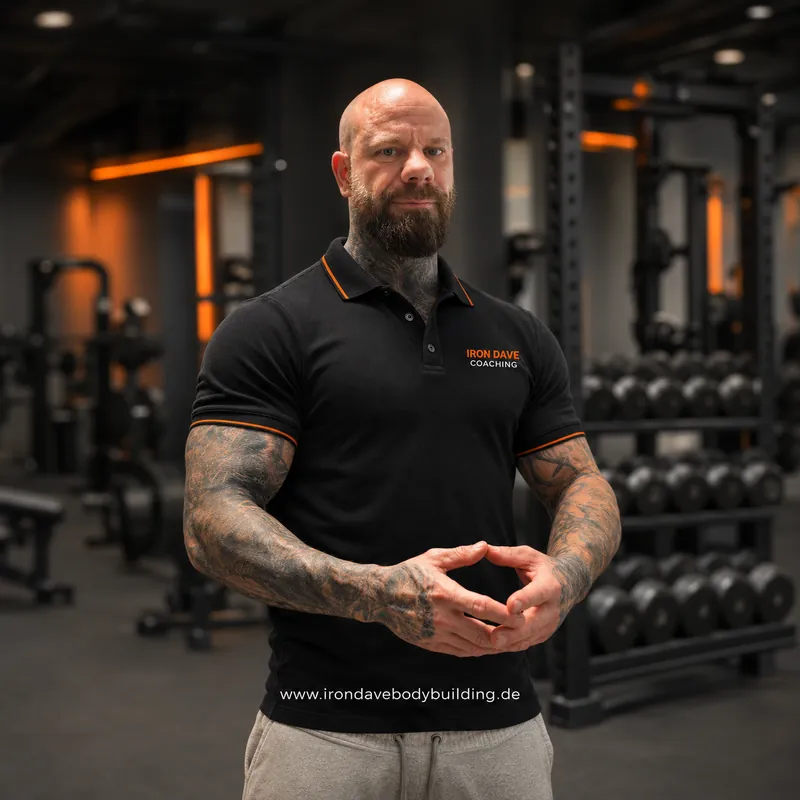
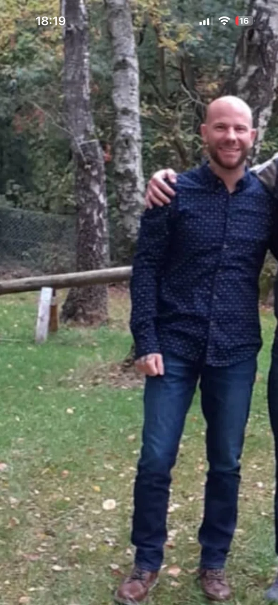
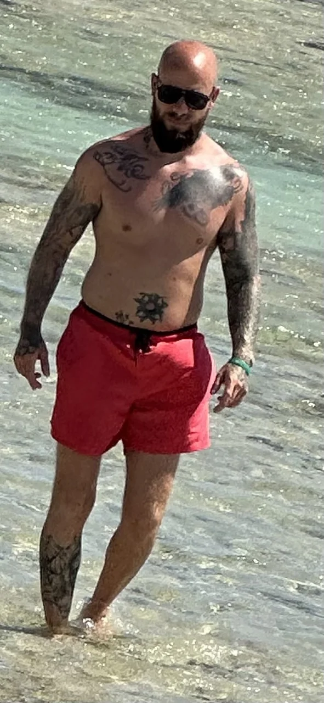
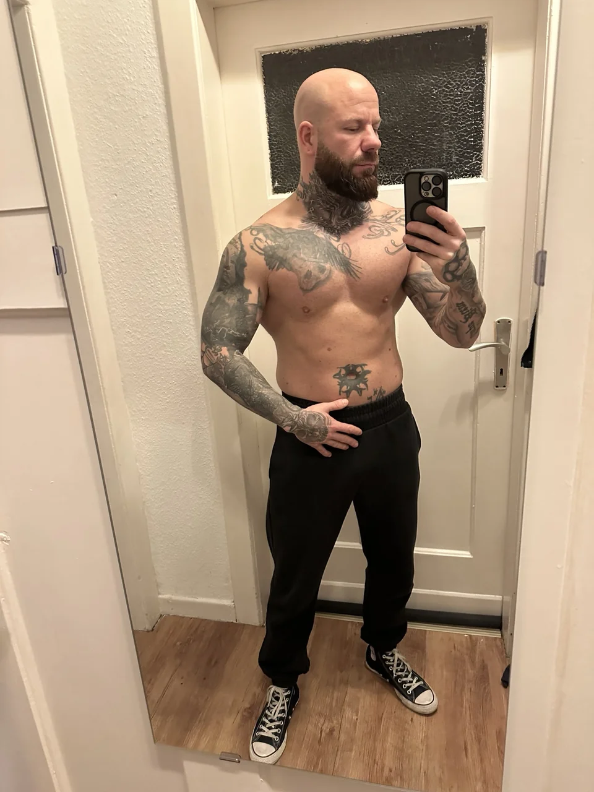
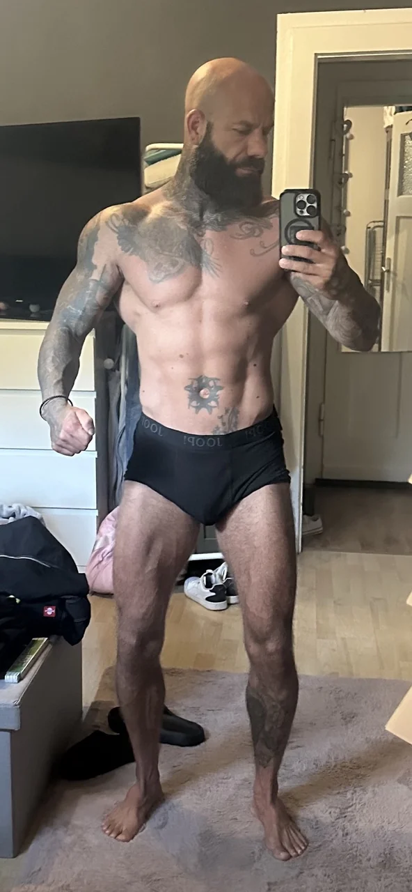
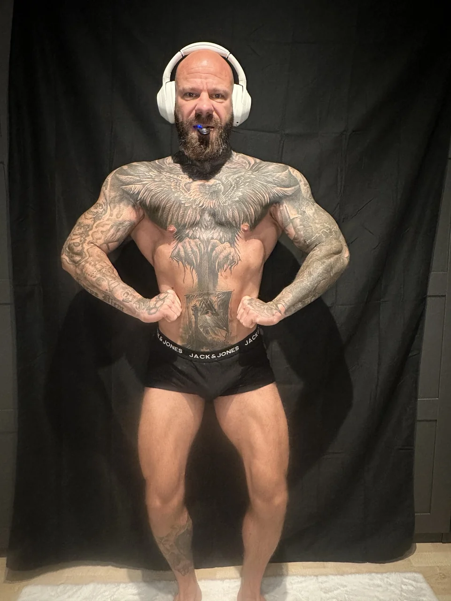

3 Monate
BASIS
Der Start für Männer, die endlich Struktur wollen.
Leistungen ansehen →BASIS im Erstgespräch besprechen
Online-Bodybuilding-Coaching · Männer 30+
Online-Coaching für Männer 30+
mit oder ohne TRT.
Ich bin Dave – Bodybuilder und Vollzeit-Elektriker. Ich helfe dir, Muskeln aufzubauen und Körperfett zu reduzieren: mit einem Plan für Training und Ernährung, der zu deinem Job und deinem Alltag passt.
15 Minuten · kostenlos & unverbindlich
03:45 Uhr ist meine Trainingszeit. Dein Plan passt zu deinen Zeiten.
Individuell geplant.Training & Ernährung
Im Alltag umgesetzt.Beruf & Training verbinden
Regelmäßig überprüft.Entwicklung & Anpassung
Für wen ich da bin
Du willst Muskeln aufbauen oder Körperfett reduzieren, aber dir fehlt eine klare Linie? Vielleicht trainierst du schon länger und kommst kaum voran. Vielleicht passen deine Mahlzeiten und dein Training noch nicht zu deinem Job.
Mein Coaching richtet sich an Männer ab 30 – mit oder ohne TRT. Für die Zusammenarbeit zählen dein Ziel, dein Ausgangspunkt und die Möglichkeiten, die du regelmäßig nutzen kannst.
Ob meine Betreuung zu dir passt, besprechen wir persönlich.
So funktioniert mein Coaching →Nach links wischen → · Zum Vergrößern antippen





Fünf Stationen meiner späteren Entwicklung. Mein Weg begann bereits mit 18 und etwa 52 kg. Die Fotos zeigen meinen eigenen Weg und sind keine Zusage für bestimmte Ergebnisse im Coaching.
Dein Coaching
Kein Plan von der Stange. Kein „Folge mir und hoffe“. Mit persönlicher Betreuung und regelmäßigen Anpassungen.
3 Monate
Der Start für Männer, die endlich Struktur wollen.
Leistungen ansehen →BASIS im Erstgespräch besprechen★ Beliebteste Wahl
6 Monate
Für Männer, die es dieses Mal wirklich durchziehen.
Leistungen ansehen →PLUS im Erstgespräch besprechen6 Monate
Maximale Betreuung – Körper UND Gesundheit im Blick.
Leistungen ansehen →ELITE im Erstgespräch besprechenKundenstimmen
„Mit der Betreuung bin ich sehr zufrieden, es wird alles direkt und logisch erklärt … Der Ernährungsplan ist perfekt für mich abgestimmt … Besonders gefällt mir, dass sich Zeit für einen genommen wird und man nicht einfach so schnell abgearbeitet wird. Ich habe jetzt schon einen Gewichts- und Kraftzuwachs.“
„Besonders gut finde ich, dass du immer schnell antwortest, gut erreichbar bist und auf Fragen oder Probleme zeitnah eingehst … dass du die Trainingspläne individuell anpasst … Ich habe das Gefühl, dass ich bei dir gut aufgehoben bin und einen Coach an meiner Seite habe.“
Individuelle Ergebnisse können abweichen.
Direkt an Dave · 01520 4467918 · MALOCHEN • EISEN • DISZIPLIN
So starten wir
Was möchtest du verändern? Wo stehst du im Training und wie viel Zeit kannst du einplanen?
In einem kostenlosen, unverbindlichen Gespräch von 15 Minuten klären wir dein Anliegen und welches Angebot zu dir passt.
Wir vereinbaren Umfang, Preis und Start deiner Betreuung. Danach folgen Buchung und Bezahlung.
Kurz geklärt
Ja. Mein Coaching ist für Männer ab 30 mit oder ohne TRT geeignet. Auch wenn du keine Hormone oder Peptide nutzt, bist du bei mir richtig. Training, Ernährung und Fortschrittskontrolle bilden die Grundlage. Die vereinbarte Aufklärung zu PEDs & Peptiden bleibt Teil des entsprechenden Angebots. Medizinische Diagnosen und Behandlungsentscheidungen gehören in ärztliche Betreuung.
Nein. Das ist mein persönlicher Rhythmus. Deine Trainingszeiten richten sich nach deinem Alltag – morgens, nach Feierabend oder am Wochenende.
Eine Anfrage ist auch ohne langjährige Trainingserfahrung willkommen. Erzähl mir, wo du stehst. Im Kennenlernen klären wir, ob meine Betreuung zu deinem Vorhaben passt.
Den Preis nennen wir im kostenlosen Erstgespräch. Es gibt BASIS für 3 Monate sowie PLUS und ELITE für 6 Monate. Zahlung monatlich oder einmalig mit Rabatt. Pakete ansehen.
Dein nächster Schritt
15 Minuten kostenlos kennenlernen. Wir klären, welche Unterstützung zu dir und deinem Alltag passt.
Weitere Wege
Vier Wochen · Persönlich erreichbar
Du nutzt eine Abnehm-Spritze unter ärztlicher Begleitung und möchtest Unterstützung bei Fragen zu Ernährung, Bewegung und deinem Alltag? Hier ist Raum für deine Fragen.
49 €
Einmalig für vier Wochen · keine automatische Verlängerung
Individuelle Trainings- und Ernährungspläne sind separat erhältlich. Medikamentenauswahl, Dosierung und medizinische Beschwerden gehören zum behandelnden Arzt. Kein medizinischer Notfallkontakt.
Kooperationen
Meine Kooperationspartner ansehen →